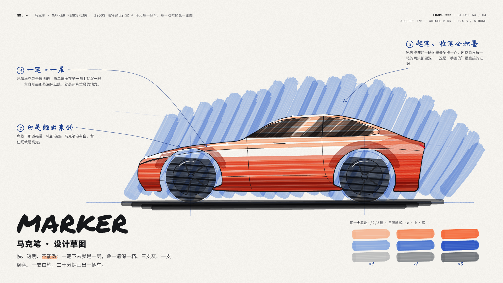
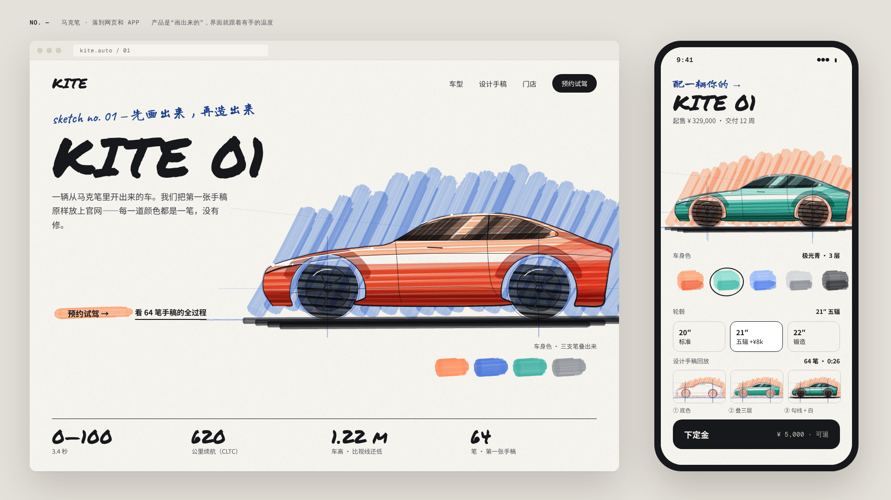
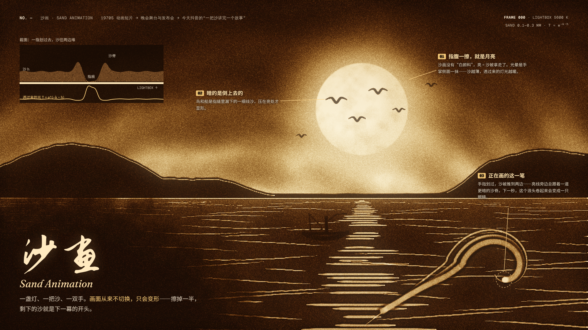
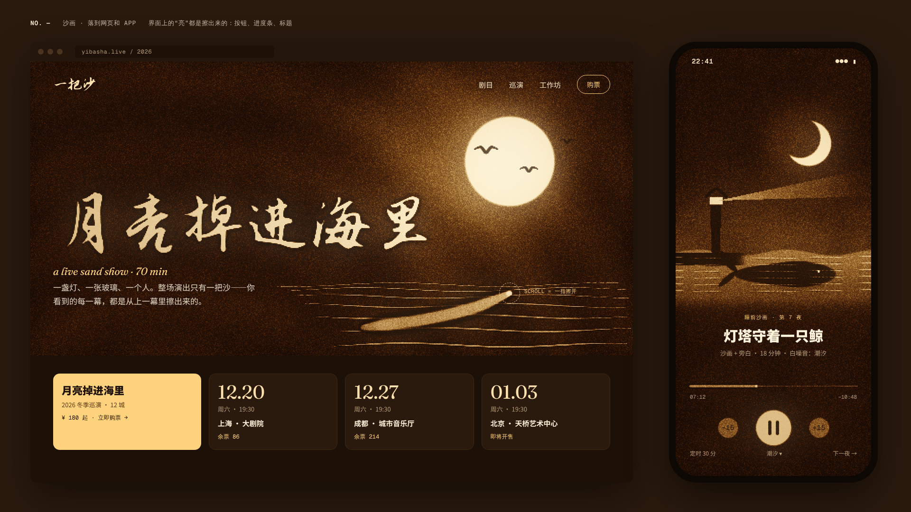
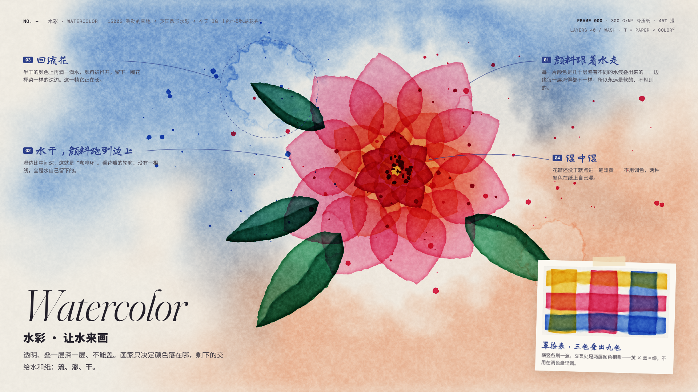
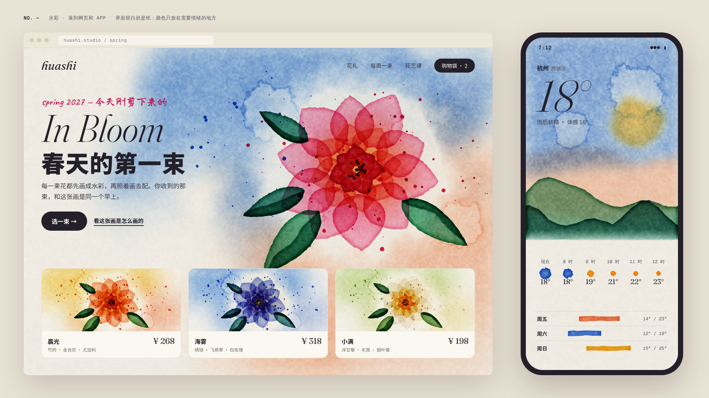

马克笔Marker Rendering
1950s 底特律设计室 → 今天每一辆车、每一双鞋的第一张图
一笔就是一层，叠一遍深一档——不能改。

第 0 帧 · 64 笔画完一辆概念跑车（原创造型）：蓝铅笔结构线 → 背景斜扫 → 车身浅 / 中 / 深三层 → 玻璃留一道反光 → 针管笔勾线 → 最后一笔白。每一笔都是透明的扁头笔触，重叠处变深、起笔收笔积墨。

界面 · 车企官网把手稿原样当头图，按钮底色是一笔马克笔；手机配置器换一组笔就是另一台车，下面是“手稿回放”的三个阶段。配方：叠色 = multiply、扁头宽度随走向变、三层就够。
沙画Sand Animation
1970s 动画短片 → 晚会舞台与发布会 → 今天抖音的“一把沙讲完一个故事”
亮是擦出来的，暗是倒上去的；画面只会变形，不会切换。

第 0 帧 · 月夜海面：沙是一张厚度图，灯箱透光 T = e−k·h，薄处透出琥珀色。手指划过时沙被推到两边，每道亮线旁都有一道暗沙脊；右下那个浪头正画到一半（下一秒卷成一只眼睛）。

界面 · 沙画巡演官网：标题是用手指“写”在沙上的，滚动 = 一指擦开；睡前沙画 App 的进度条、播放键都是擦出来的亮。配方：厚度 → 透光、沙脊、掌抹渐变、倒沙。
水彩Watercolor
1500s 丢勒的草地 → 英国风景水彩 → 今天 IG 上的“松弛感花卉”
画家只决定颜色落在哪，剩下的交给水：流、渗、干。

第 0 帧 · 一朵大花：背景两色湿画法互渗、绕开花留白；每片颜色是 40 层变形水痕，湿边更深、颜料沉进纸纹；左上一滴水正在长成回流花。右下角罩染表：三色叠出九色。

界面 · 花店官网：同一套画法换三组颜色就是三束花；天气 App 的天空是一张湿画法，雨的概率是一滴颜色的大小，温度条是一笔。配方：变形多边形叠层、湿边、颗粒、T = 纸 × 色d。